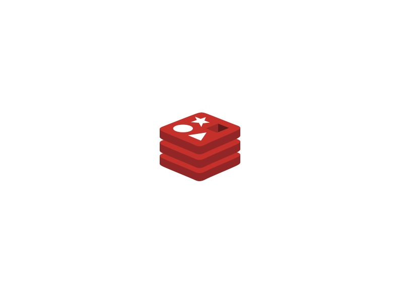
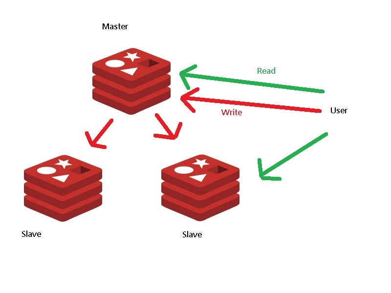
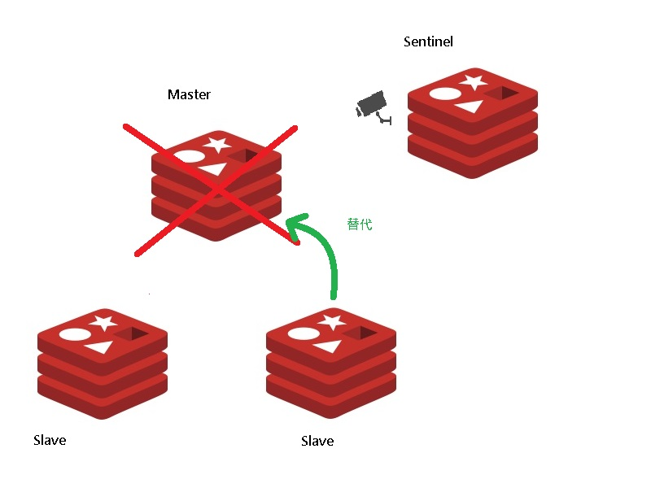
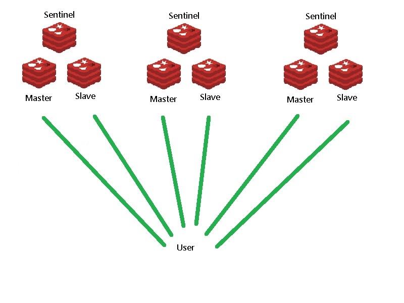

- Redis運行模式
- 單點結構: 指運行一個redis基礎設施
 - 主從模式(master/slaver): master可讀寫，slave只可讀，負載平衡用；master掛掉後就不能運作
 - Sentinel模式: 建構在主從模式上額外多了個哨兵(Sentinel)，藉由哨兵來判定master是否健康，master可由slave替代
 - Cluster模式: 建構在Sentinel模式上，每個Sentinel群組作為一個node，一個cluster至少需三個node

- 單點結構: 指運行一個redis基礎設施
- 範例程式